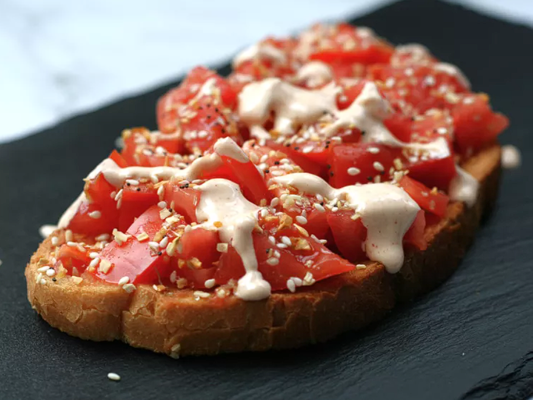

Odin Recipes
Odin has many names and is the god of both war and death.
Tomato Toast with Sriracha Mayo
Description
Simple, yet flavorful, this tomato toast with Sriracha mayo makes the perfect lunch, brunch or afternoon snack. Best made with garden-fresh tomatoes or ripe heirloom tomatoes—sometimes I chop the tomatoes, sometimes I slice them. Use crusty bread for best results, as it is sturdy enough to hold the tomato.
Ingredients
- 1 tablespoon mayonnaise
- 3/4 teaspoon lime juice
- 1/2 teaspoon Sriracha sauce
- 2 slices bread
- 1 large heirloom tomato, chopped or sliced
- 2 teaspoons everything bagel seasoning, or to taste
Directions
Step 1: In a small bowl, mix together mayonnaise, lime juice, and sriracha sauce. Set aside.
Step 2: Toast bread in a toaster or toaster oven. Top with tomato, sprinkle with everything bagel seasoning to taste, then drizzle with sriracha mayo.
Back to the main page
Original Recipe